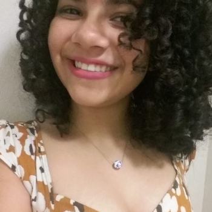

- Home
- >
- Currículo
Currículo
Dados Pessoais

Nome:
Iasmim Alves Bezerra
Data de Nascimento:
17/02/2001
Residência:
Rio de Janeiro, Brasil
Idiomas:
Português (Nativo)
Inglês - Intermediário
Sobre Mim
Tenho formação de nível Técnico em Multimídia pelo C.E José Leite Lopes (NAVE Rio), atuo em diferentes áreas do Design. Possuo mente inquieta, empreendedora e criativa. Atualmente, estou desenvolvendo e aprimorando as minhas habilidades através de cursos online. Sou co-fundadora do aplicativo MAISTORCEDORAS, que visa aumentar a presença feminina nas arquibancadas cariocas.
Educação
Ensino Médio
2016-2018
Colégio Estadual José Leite Lopes/Nave Rio
Técnico em Multimídia e Design Digital
2016-2018
NAVE RIO - Núcleo Avançado em Educação
Habilidades
Design Gráfico
Photoshop / illustrator / Figma / Invision
Desenvolvimento Web
HTML / CSS
Pacote Office
Excel / Word / PowerPoint
Experiência Extracurricular
Palestrante
Tack Festival
Palestrante no painel "A voz das gerações", sobre futuro do trabalho, inovação, cultura, papel da escola e longevidade.
Participante
Technovation Challenge - RIO
Desenvolvi o protótipo de um aplicativo que visa aumentar a representatividade feminina nas arquibancadas cariocas. O processo envolveu: ideação, criação de design de interface, código fonte, plano de negócio e vídeo-pitch.
Participante
Global Service Jam - RIO
Trabalhei colaborativamente com times focados em experimentar e desenvolver em 48h serviços inovadores centrados no ser humano, através da abordagem Design de Serviço e Design Thinking.
Participante
Agência Trustme
Participei do Workshop DT Youth 4 Change - Imersão em Design Thinking para jovens.
Desenvolvi o protótipo de uma startup utilizando a metodologia do Design Thinking. A startup "Tia Bete" - Delivery de comida saudável, foi um dos dois projetos vencedores do desafio proposto.
Contato
iasmimalvesb@gmail.com
(21) 9 7141-5827
⟵ Voltar ao início